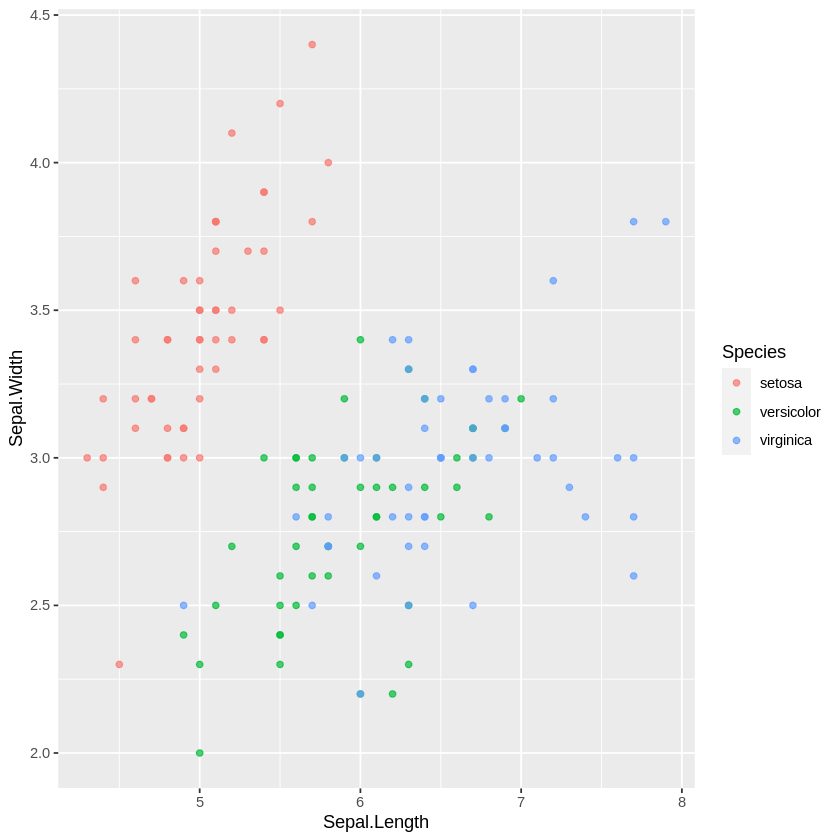

Google Colab R
Contents
Google Colab R¶
Google is now supporting a Colab notebook with the R kernel
We can run R codes directly on Colab
R Colab Notebook Link: R Google Colab
Colab with R kernel
With base-R installed
Run R codes immediately
No need to setup
Save a copy in your Drive
Demonstration¶
This notebook uses the R kernel.
sessionInfo()
R version 4.0.2 (2020-06-22)
Platform: x86_64-pc-linux-gnu (64-bit)
Running under: Ubuntu 18.04.5 LTS
Matrix products: default
BLAS: /usr/lib/x86_64-linux-gnu/openblas/libblas.so.3
LAPACK: /usr/lib/x86_64-linux-gnu/libopenblasp-r0.2.20.so
locale:
[1] LC_CTYPE=en_US.UTF-8 LC_NUMERIC=C
[3] LC_TIME=en_US.UTF-8 LC_COLLATE=en_US.UTF-8
[5] LC_MONETARY=en_US.UTF-8 LC_MESSAGES=en_US.UTF-8
[7] LC_PAPER=en_US.UTF-8 LC_NAME=C
[9] LC_ADDRESS=C LC_TELEPHONE=C
[11] LC_MEASUREMENT=en_US.UTF-8 LC_IDENTIFICATION=C
attached base packages:
[1] stats graphics grDevices utils datasets methods base
loaded via a namespace (and not attached):
[1] compiler_4.0.2 ellipsis_0.3.1 IRdisplay_0.7.0 pbdZMQ_0.3-3
[5] tools_4.0.2 htmltools_0.5.0 pillar_1.4.6 base64enc_0.1-3
[9] crayon_1.3.4 uuid_0.1-4 IRkernel_1.1.1 jsonlite_1.7.1
[13] digest_0.6.25 lifecycle_0.2.0 repr_1.1.0 rlang_0.4.7
[17] evaluate_0.14
library(ggplot2)
library(dplyr)
Attaching package: ‘dplyr’
The following objects are masked from ‘package:stats’:
filter, lag
The following objects are masked from ‘package:base’:
intersect, setdiff, setequal, union
head(iris)
| Sepal.Length | Sepal.Width | Petal.Length | Petal.Width | Species | |
|---|---|---|---|---|---|
| <dbl> | <dbl> | <dbl> | <dbl> | <fct> | |
| 1 | 5.1 | 3.5 | 1.4 | 0.2 | setosa |
| 2 | 4.9 | 3.0 | 1.4 | 0.2 | setosa |
| 3 | 4.7 | 3.2 | 1.3 | 0.2 | setosa |
| 4 | 4.6 | 3.1 | 1.5 | 0.2 | setosa |
| 5 | 5.0 | 3.6 | 1.4 | 0.2 | setosa |
| 6 | 5.4 | 3.9 | 1.7 | 0.4 | setosa |
iris %>%
ggplot(aes(Sepal.Length, Sepal.Width, color=Species))+
geom_point(alpha=0.7)
